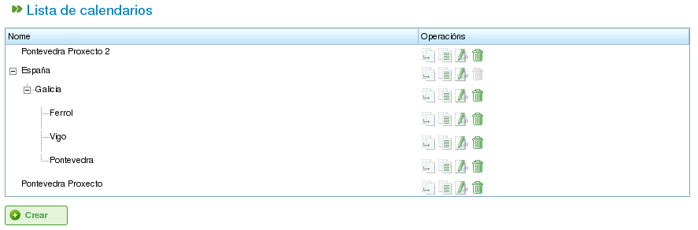

Календарі
Contents
Календарі — це сутності в програмі, що визначають виробничу потужність ресурсів. Календар складається з ряду днів протягом року, де кожен день поділено на доступні робочі години.
Наприклад, вихідний день може мати 0 доступних робочих годин. Навпаки, звичайний робочий день може мати 8 годин, визначених як доступний робочий час.
Є два основних способи визначення кількості робочих годин на день:
- За днями тижня: Цей метод встановлює стандартну кількість робочих годин для кожного дня тижня. Наприклад, понеділки зазвичай можуть мати 8 робочих годин.
- Виключеннями: Цей метод дозволяє відхилятися від стандартного розкладу за днями тижня. Наприклад, понеділок 30 січня може мати 10 робочих годин, що замінює стандартний розклад понеділка.
Адміністрування календарів
Система календарів є ієрархічною, що дозволяє створювати базові календарі, а потім похідні від них, утворюючи деревоподібну структуру. Календар, похідний від календаря вищого рівня, успадкує його денні розклади та виключення, якщо вони не були явно змінені. Для ефективного управління календарями важливо розуміти такі концепції:
- Незалежність днів: Кожен день розглядається незалежно, і кожен рік має власний набір днів. Наприклад, якщо 8 грудня 2009 року є державним святом, це не означає автоматично, що 8 грудня 2010 року також є державним святом.
- Робочі дні на основі днів тижня: Стандартні робочі дні ґрунтуються на днях тижня. Наприклад, якщо у понеділків зазвичай 8 робочих годин, то всі понеділки всіх тижнів усіх років матимуть 8 доступних годин, якщо не визначено виключення.
- Виключення та періоди виключень: Ви можете визначати виключення або їхні періоди для відхилення від стандартного розкладу за днями тижня. Наприклад, можна вказати один день або діапазон днів з іншою кількістю доступних робочих годин, ніж загальне правило для цих днів тижня.

Адміністрування календарів
Адміністрування календарів доступне через меню «Адміністрування». Звідти користувачі можуть виконувати такі дії:
- Створити новий календар з нуля.
- Створити календар, похідний від наявного.
- Створити календар як копію наявного.
- Редагувати наявний календар.
Створення нового календаря
Щоб створити новий календар, натисніть кнопку «Створити». Система відобразить форму, де ви можете налаштувати таке:
- Вибрати вкладку: Виберіть вкладку, з якою хочете працювати:
- Позначення виключень: Визначення виключень зі стандартного розкладу.
- Робочі години на день: Визначення стандартних робочих годин для кожного дня тижня.
- Позначення виключень: Якщо вибрати параметр «Позначення виключень», можна:
- Вибрати конкретний день у календарі.
- Вибрати тип виключення. Доступні такі типи: відпустка, хвороба, страйк, державне свято та робоче свято.
- Вибрати дату закінчення періоду виключення. (Це поле не потрібно змінювати для одноденних виключень.)
- Визначити кількість робочих годин протягом днів періоду виключення.
- Видалити раніше визначені виключення.
- Робочі години на день: Якщо вибрати параметр «Робочі години на день», можна:
- Визначити доступні робочі години для кожного дня тижня (понеділок, вівторок, середа, четвер, п'ятниця, субота та неділя).
- Визначити різні розподіли тижневих годин для майбутніх періодів.
- Видалити раніше визначені розподіли годин.
Ці параметри дозволяють користувачам повністю налаштовувати календарі відповідно до їхніх конкретних потреб. Натисніть кнопку «Зберегти», щоб зберегти будь-які зміни, внесені до форми.

Редагування календарів

Додавання виключення до календаря
Створення похідних календарів
Похідний календар створюється на основі наявного календаря. Він успадковує всі функції вихідного календаря, але ви можете змінити його, включивши різні параметри.
Поширений приклад використання похідних календарів: коли є загальний календар для країни, наприклад України, і потрібно створити похідний календар для включення додаткових державних свят, характерних для певного регіону, наприклад Галичини.
Важливо зазначити, що будь-які зміни, внесені до вихідного календаря, автоматично поширяться на похідний календар, якщо в похідному календарі не визначено конкретне виключення. Наприклад, в українському календарі може бути 8-годинний робочий день 17 травня. Однак у галицькому календарі (похідному) може не бути робочих годин того самого дня, оскільки це регіональне державне свято. Якщо в українському календарі пізніше буде змінено розклад на 4 доступних робочих години на день для тижня 17 травня, галицький календар також зміниться на 4 доступних робочих години для кожного дня того тижня, крім 17 травня, який залишиться вихідним через визначене виключення.

Створення похідного календаря
Щоб створити похідний календар:
- Перейдіть до меню Адміністрування.
- Натисніть параметр Адміністрування календарів.
- Виберіть календар, який хочете використати як основу для похідного календаря, і натисніть кнопку «Створити».
- Система відобразить форму редагування з тими самими характеристиками, що й форма для створення календаря з нуля, за винятком того, що запропоновані виключення та робочі години на день тижня будуть засновані на вихідному календарі.
Створення календаря копіюванням
Скопійований календар є точним дублікатом наявного календаря. Він успадковує всі функції вихідного календаря, але ви можете змінювати його незалежно.
Ключова відмінність між скопійованим та похідним календарем полягає в тому, як на них впливають зміни вихідного. Якщо вихідний календар змінюється, скопійований залишається незмінним. Однак похідні календарі зазнають впливу від змін вихідного, якщо не визначено виключення.
Поширений приклад використання скопійованих календарів: коли є календар для одного міста, наприклад «Полтава», і потрібен подібний календар для іншого міста, наприклад «Харків», де більшість функцій є однаковими. Однак зміни в одному календарі не повинні впливати на інший.
Щоб створити скопійований календар:
- Перейдіть до меню Адміністрування.
- Натисніть параметр Адміністрування календарів.
- Виберіть календар, який хочете скопіювати, і натисніть кнопку «Створити».
- Система відобразить форму редагування з тими самими характеристиками, що й форма для створення календаря з нуля, за винятком того, що запропоновані виключення та робочі години на день тижня будуть засновані на вихідному календарі.
Календар за замовчуванням
Один з наявних календарів може бути призначений календарем за замовчуванням. Цей календар буде автоматично призначений будь-якій сутності в системі, яка управляється за допомогою календарів, якщо не вказано інший календар.
Щоб налаштувати календар за замовчуванням:
- Перейдіть до меню Адміністрування.
- Натисніть параметр Конфігурація.
- У полі Календар за замовчуванням виберіть календар, який хочете використовувати як стандартний календар програми.
- Натисніть Зберегти.

Встановлення календаря за замовчуванням
Призначення календаря ресурсам
Ресурси можуть бути активовані (тобто мати доступні робочі години) лише за наявності призначеного календаря з дійсним періодом активації. Якщо ресурсу не призначено жодного календаря, за замовчуванням призначається стандартний календар з датою початку, що відповідає даті початку, та без терміну дії.

Календар ресурсу
Однак ви можете видалити календар, раніше призначений ресурсу, та створити новий на основі наявного. Це дозволяє повністю налаштовувати календарі для окремих ресурсів.
Щоб призначити календар ресурсу:
- Перейдіть до параметра Редагувати ресурси.
- Виберіть ресурс і натисніть Редагувати.
- Виберіть вкладку «Календар».
- Буде відображено календар разом із його виключеннями, робочими годинами на день та періодами активації.
- Кожна вкладка матиме такі параметри:
- Виключення: Визначення виключень та їхнього застосування, наприклад відпустки, державні свята або різні робочі дні.
- Робочий тиждень: Зміна робочих годин для кожного дня тижня (понеділок, вівторок тощо).
- Періоди активації: Створення нових періодів активації для відображення дат початку та завершення контрактів, пов'язаних з ресурсом. Дивіться наступне зображення.
- Натисніть Зберегти, щоб зберегти інформацію.
- Натисніть Видалити, якщо бажаєте змінити календар, призначений ресурсу.

Призначення нового календаря ресурсу
Призначення календарів проєктам
Проєкти можуть мати інший календар, ніж стандартний. Щоб змінити календар для проєкту:
- Перейдіть до списку проєктів в огляді компанії.
- Відредагуйте відповідний проєкт.
- Перейдіть до вкладки «Загальна інформація».
- Виберіть календар для призначення зі спадного меню.
- Натисніть «Зберегти» або «Зберегти і продовжити».
Призначення календарів завданням
Подібно до ресурсів і проєктів, ви можете призначати конкретні календарі окремим завданням. Це дозволяє визначати різні календарі для конкретних етапів проєкту. Щоб призначити календар завданню:
- Перейдіть до виду планування проєкту.
- Клацніть правою кнопкою миші завдання, якому хочете призначити календар.
- Виберіть параметр «Призначити календар».
- Виберіть календар для призначення завданню.
- Натисніть Прийняти.